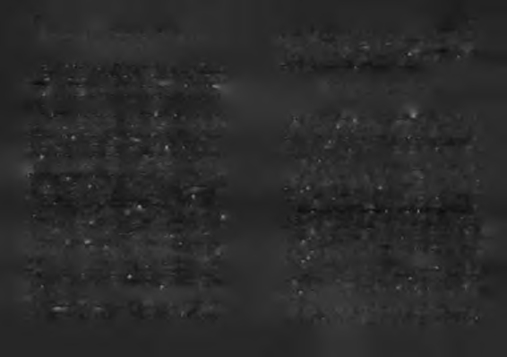

kalbini katılaştırmasın. Sevdiğin insanları ellerinden
insan olmanm mantığını olabildiğince iyi anlattığım düşünüdeğil kalbinden tut.
yorum.
3. Çalışan eller. Ellerin boş kalmasın. İnsan daha iyi bir
dünyayı aklıyla tasarlasa da, elleriyle şekillendirir. Ha
Sen yine de doğrusunu yap!
yat eylemlerde, eylem ellerdedir. Boş eller kötülüklere
1. İnsanlar çoğu kez makul değildir, mantıksız ve bencilyardım ve yataklık eder.
dirler. Onları yine de sevin!
O gün o parkta aklıma gelen bir cümleyi "Her Şey Senin
1. İyilik yaparsanız insanlar sizi bencillikle, gizli amaçlale Başlar" ı yazdığım süre boyunca panomda tuttum. Kitaba ra sahip olmakla suçlayabilir. Yine de iyilik yapın!
ruhunu veren o cümle şuydu: Büyük başarı kalpten gelir, beyin
3. Başarılıysanız, sahte arkadaşlar ve gerçek düşmanlar
de büyür, ellerden hayata akar.
edinebilirsiniz. Yine de başarılı olun!
4. Bugün yaptığınız iyilik yarın unutulacaktır. Siz yine de
İn s an la ra r a ğ m e n , in s a n la r için b a ş a rm a k :
iyilik yapın!
" S e n yine de dnğrusunu y a p !"
5. Dürüstlük ve açık sözlülük sizi kırılgan yapabilir. Siz
yine de dürüst ve açık sözlü olun!
Başarılı olma sürecinde çok sayıda insanla "uğraşmanız"
6. En büyük, "büyük düşünen kadın ve erkekler", en kügerekecek. Canınızı sıkan insanlara kızıp, insanlığa inancını
çük "küçük düşünen kadın ve erkekler" tarafından
zı yitirip, insanlar için iyi şeyler yapma motivasyonunuzu
alaşağı edilebilirler. Siz yine de büyük düşünün!
sık sık yitirebilirsiniz.
7. İnsanlar güçsüz insanları tercih eder, ama yalnız güç-
Böyle bunaldığınız (zam)anlarda, dünyayı bulduğunuzlüleri izlerler. Siz yine de gerektiğinde birkaç güçsüz adına dan daha iyi bırakmak bir yana, Shakespeare'in bir sonesin
savaşın!
de yazdığı gibi "zırhınız sırtınızda ölmeyi" bile isteyebilirsi8. İnşa etmeye yıllarınızı verdiğiniz bir şey bir gecede yıniz: kılabilir. Yine de inşa edin!
"Ben güneşi görmekten bezdim artık. Varsın dünya yok oluver-
sinl Çalsın bela çanları. Essin ölüm rüzgarları. Zırhımız sırtımız
9. Yardıma ihtiyacı olan insanlara yardım ettiğinizde, on
da ölürüz hiç olmazsa!"
ların saldırısına maruz kalabilirsiniz. Siz yine de yardım
İnsanlığa olan inancınızı yitirdiğiniz zamanlarda Kenneth
edin!
M. Keith'in aşağıdaki metnini okumanızı öneririm. İnsanları
10. Dünyayı daha iyi bir yer yapmak için elinizden geleni
bazen insanlara rağmen sevmenin, "inadına" doğru ve iyi bir
yaptığınızda, tekmeyi yiyebilirsiniz. Siz yine de dünya
için elinizden geleni yapın!

140